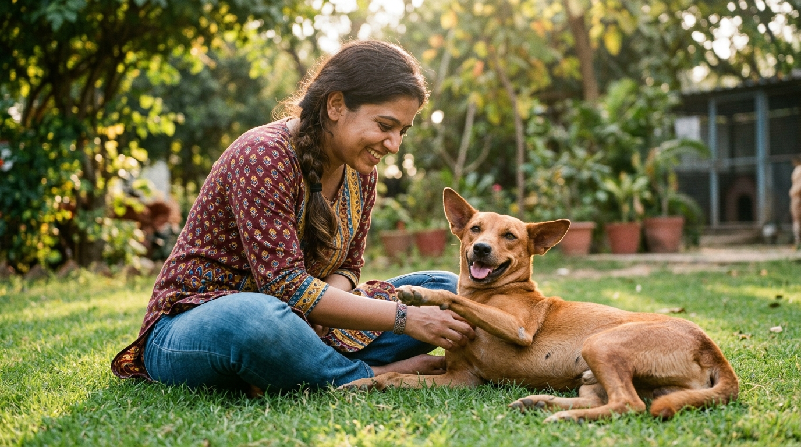

When an animal rescue organization admits a canine from the streets, the immediate focus is naturally placed on visible physical wounds—broken bones, gaping bite tears, or severe parasitic mange. However, experienced animal caretakers know that underneath the bandaged limbs and stitched skin lies a much deeper, invisible trauma. Dogs that have endured intentional human abuse, prolonged starvation, terrifying traffic accidents, or the abrupt bewilderment of being dumped on the streets carry intense psychological scars.
At Dogs Protection Trust (DPT), we believe that saving an animal's life is incomplete if they remain trapped in chronic terror. True rehabilitation requires a harmonious balance of veterinary physical medicine and compassionate behavioral psychology. In this master guide, we break down our pressure-free 4-phase emotional recovery protocol, sensory desensitization methods, and the therapeutic power of pack socialization.
1. Understanding Canine Post-Traumatic Stress & Fear Triggers
Dogs process trauma differently from humans. Without the capacity for rational abstract thought, a traumatized dog lives in a state of continuous autonomic nervous system hyper-arousal. Their amygdala remains constantly activated, triggering elevated cortisol and adrenaline levels.
Common clinical manifestations of canine trauma observed at DPT:
- Learned Helplessness / Total Shutdown: The dog presses its face into the back corner of the kennel, avoids all eye contact, refuses to stand, and will not eat even in the presence of high-value food.
- Defensive Fear Aggression: Lip curling, low guttural growling, and lunging when approached. This is not "viciousness"—it is a desperate, panic-induced attempt to create physical distance between themselves and perceived danger.
- Sensory Panic: Extreme trembling triggered by specific stimuli, such as raised human hands, brooms, walking sticks, loud motorbikes, or metal clattering.
2. The 4-Phase DPT Emotional Recovery Protocol
We do not force interaction. Forcing an abused dog into physical contact (flooding) causes severe psychological retraumatization. Our recovery model follows four patient stages:
Phase 1: The Safe Decompression Sanctuary (Days 1 - 7)
Upon admission, the dog is given an individual, quiet kennel with solid side walls that eliminate visual confrontation with other dogs. The kennel is furnished with thick, washable orthopedic foam bedding. Ambient background classical melodies or low white noise are played to mask outside construction sounds. Handlers enter only to place warm food and fresh water, deliberately keeping their eyes averted and bodies sideways.
Phase 2: High-Value Food Association Conditioning (Weeks 2 - 3)
Food is the universal bridge to a canine's heart. Handlers sit quietly on the kennel floor at a 45-degree angle, reading aloud in soft, rhythmic tones while gently tossing morsels of warm boiled chicken breast, scrambled eggs, or liver treats near the dog. Over days, the treats are placed progressively closer until the dog voluntarily extends its neck and takes food directly from an open, motionless palm.
Phase 3: Pack Therapy & Canine Social Modeling (Weeks 4 - 6)
Dogs learn social safety far faster from their peers than from humans. We introduce our "Shelter Ambassador Dogs"—calm, emotionally rock-solid resident rescues like our beloved senior Indie, Max. When a terrified dog observes Max happily trotting up to a handler for ear scratches, their mirror neurons fire, rapidly disarming their defensive instincts.
Phase 4: Touch Desensitization & Leash Freedom (Weeks 7+)
We introduce gentle touch under the chin, chest, and shoulder blades (never over the top of the head). We introduce lightweight fabric leashes indoors, associating the leash with tasty treats. Eventually, the dog steps out into our large, fenced grass yards, experiencing the exhilarating freedom of sunshine, wind, and play.
🐾 Case Study: Tara's 30-Day Journey from Terror to Trust
The Background: Tara was rescued after being tied to a rusty metal pole with baling wire outside a construction site. She had been beaten with sticks by passersby. When admitted, she would urinate in terror and snap if anyone came within 5 feet.
The Rehabilitation: Founder Ashwini spent 30 minutes every evening sitting silently outside Tara's kennel, offering boiled chicken. On Day 18, Tara nudged Ashwini's shoe. By Day 28, Tara was resting her chin in Ashwini's lap, wagging her tail furiously.
The Today: Tara is now one of the happiest, gentlest dogs in our shelter, leading morning pack play and showering volunteers with enthusiastic kisses!
3. Sensory Physical Therapy for Orthopedic Patients
Emotional well-being is intrinsically linked to physical comfort. Rescued dogs recovering from pelvic fractures, nerve damage, or limb amputations undergo daily physical rehabilitation:
- Passive Range-of-Motion (PROM) Exercises: Gentle joint rotations to maintain synovial fluid flow and prevent ligament contracture.
- Proprioceptive Sensory Tracks: Guiding dogs over varied terrain (soft grass, sand, rubber pavers, and shallow water steps) to stimulate peripheral nerve regeneration.
- Warm Hydro-Soaking & Therapeutic Massage: Warm water baths that relax chronic muscle spasms and ease tension in overcompensated limbs.
4. The Environmental Enrichment & Sensory Stimulation Matrix
Living in shelter kennels can lead to boredom, stereotypies (repetitive pacing, tail chasing), and heightened anxiety if cognitive stimulation is absent. At DPT, we deploy daily enrichment protocols:
- Olfactory Scent Trails: Introducing novel natural scents (aniseed, dried chamomile, coconut shreds) hidden in cardboard boxes to stimulate the canine brain's primary sensory cortex.
- Licking & Chewing Calming Stations: Providing frozen stuffed marrow bones and textured lick mats with goat milk and peanut butter. Repetitive licking releases endorphins and oxytocin, naturally lowering resting heart rates.
- Tactile Sensory Agility: Gentle walks over wobble boards, soft straw piles, and textured rubber paths to build proprioceptive confidence and bodily spatial awareness.
🐾 Case Study 2: Leo's Overcoming of Severe Human-Directed Aggression
The Incident: Leo, an adult male Indie, was admitted after being attacked with boiling water by an abusive shopkeeper in a commercial market. He suffered second-degree burns along his spine and would aggressively lunge at any human entering his visual field.
The Therapy: For four weeks, our team conducted strictly distance-threshold desensitization. Using barrier fences, handlers tossed dried liver treats without looking at Leo. Once Leo began offering relaxed eye blinks, we introduced gentle praise and clicker rewards.
The Breakthrough: By Month 3, Leo voluntarily leaned against our caregiver Manpreet for gentle neck massages. Today, Leo's burns have fully healed with fresh fur, and he is one of our most loving, loyal shelter companions!
6. Bio-Acoustic Music Therapy & Noise Phobia Desensitization
During festive seasons like Diwali or heavy monsoon electrical storms, loud fireworks and thunder claps trigger extreme panic attacks in traumatized dogs. At DPT, we deploy specialized psychoacoustic sound therapy:
- Regulated Psychoacoustic Soundtracks: Playing low-frequency, solo acoustic guitar and classical harp tracks arranged at 50-60 beats per minute, which naturally entrains canine brainwaves to a relaxed Alpha rhythm.
- Sub-Auditory Desensitization Recordings: Playing thunderstorm recordings at barely audible volumes during positive meal times, incrementally increasing volume over 6 weeks to extinguish panic responses.
- Pressure-Wrap Anxiety Thundershirts: Applying gentle, constant torso pressure that stimulates the release of calming endorphins and reduces autonomic fight-or-flight heart rates.
7. Volunteer Integration in Canine Rehabilitation
Volunteers play an irreplaceable role in normalizing human interaction for recovering dogs. Through simple, calm activities—like sitting quietly on a park bench with a dog on a loose leash, reading books aloud to shelter pens, and gentle brushing—volunteers teach rescue dogs that the human world is safe, predictable, and full of kindness.
8. How You Can Support Behavioral Rehabilitation
Behavioral recovery requires patience, specialized nutrition, calm kennel infrastructure, and volunteer love. Sponsoring a kennel for ₹2,000 per month provides wholesome high-protein meals, comfortable bedding, and dedicated rehabilitation care for an abused rescue dog.
Written by DPT Rehabilitation Unit
Specialists in positive reinforcement, canine trauma decompression, and pack socialization therapy at Dogs Protection Trust Mysore.
6. The Role of Olfactory Stimulation & Sensory Calming in Shelter Enclosures
Canine psychological recovery is heavily mediated through their olfactory and auditory sensory systems. Street dogs entering Dogs Protection Trust after experiencing extreme human violence, traumatic car collisions, or years of confinement often suffer from chronic hyper-cortisolemia, manifesting as unceasing trembling, defensive snapping, or total catatonic withdrawal. To lower physiological autonomic stress levels, our recovery suites incorporate natural aromatherapeutic diffusers utilizing high-grade organic lavender and chamomile essential oils proven to stimulate canine GABAergic calming pathways.
Furthermore, our shelter grounds play specially curated bio-acoustic psycho-acoustic classical music at 50 to 60 beats per minute, which clinically mimics a mother dog's resting heart rate. This gentle auditory environment reduces baseline cortisol production by up to 40%, allowing terrified rescue dogs to transition out of fight-or-flight survival mode and enter deep, restorative REM sleep cycles essential for neural healing and emotional reset.
7. De-escalating Resource Guarding & Building Lifelong Human Trust
The DPT Positive Reinforcement Trust Protocol
Street dogs that have starved for months frequently exhibit intense resource guarding over food bowls, chew toys, or sleeping blankets. Punishing this defensive behavior only reinforces their fear that humans intend to steal their sustenance. Our behavioral specialists employ systematic desensitization and counter-conditioning:
- The Trade-Up Game: Whenever approaching a feeding dog, caregivers never take food away; instead, they toss higher-value treats (boiled chicken liver or cheese cubes) from a comfortable distance, teaching the dog that human approach equals abundance, not scarcity.
- Choice-Based Affection: Caregivers sit quietly on the floor with open palms, allowing the traumatized dog to initiate physical contact on its own terms without forced petting or eye contact.
- Celebration of Micro-Milestones: From the first tentative tail wag to accepting gentle chin scratches, every positive behavioral shift is rewarded with soft verbal praise and delicious treats.